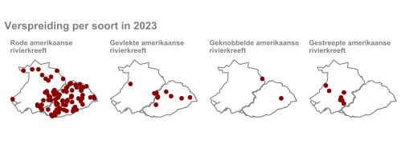
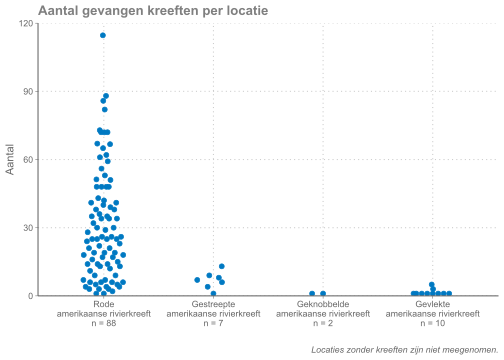

Hoofdstuk 3 Resultaten 2023
3.1 Totaal vangsten
In de onderstaande figuur is per locatie weergegeven hoeveel kreeften er gevangen zijn.2 Op 62 van de 63 locaties (98%) in de Krimpenerwaard zijn uitheemse rivierkreeften gevonden. In Schieland zijn op 32 van de 54 locaties (59%) kreeften aangetroffen.
De grootste aantallen kreeften zijn aangetroffen in het noordwesten van de Krimpenerwaard. Aan de zuidoostkant van de Krimpenerwaard en in het westen van Schieland waren de aantallen kleiner. Het grootste aantal kreeften op één locatie was 115 in de Krimpenerwaard, en 48 in Schieland.

3.2 Vangsten per soort
In het gebied zijn dit jaar vier soorten uitheemse rivierkreeften gevonden. De Gevlekte, Gestreepte, Geknobbelde, en Rode Amerikaanse Rivierkreeft. Van deze vier soorten is de Rode Amerikaanse Rivierkreeft verreweg het meest gevonden. Deze is op 88 van de 117 locaties (75%) met kreeften gevonden. De overige soorten zijn respectievelijk 10, 7, en 2 keer gevonden, meestal in lage aantallen. Op 11 locaties zijn twee verschillende soorten aangetroffen, en op één meetpunt zijn drie soorten gevonden. De Geknobbelde Amerikaanse Rivierkreeft is voor het eerst sinds 2020 weer gevangen.

De Rode Amerikaanse Rivierkreeft komt niet alleen op de meeste locaties voor, maar heeft ook de grootste aantallen per locatie, tot maximaal 115 exemplaren. Aantallen tussen de 10 en de 50 komen het meest voor. De Gestreepte Amerikaanse Rivierkreeft is met maximaal 13 exemplaren gevonden. Op de meeste locaties zijn er slechts enkele kreeften aangetroffen. Van de Geknobbelde en Gevlekte Amerikaanse Rivierkreeft zijn met 1 tot 5 kreeften de laagste aantallen gevangen.

De vangsten per locatie per soort zijn ook opgenomen in bijlage Vangsten per locatie↩︎